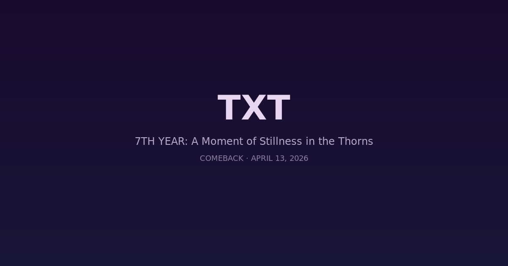

TXT Returns With Deeply Personal EP '7th Year: A Moment of Stillness in the Thorns' After Contract Renewal

SEOUL — K-pop boy group Tomorrow X Together (TXT) returned on April 13 with their eighth EP, 7th Year: A Moment of Stillness in the Thorns — a candid reflection on their career and personal growth following the recent renewal of their contracts with Big Hit Music.
Departing from the broader conceptual narratives of youth and growth found in past projects — which include the Dream Chapter, Chaos Chapter, Star Chapter, and minisode series — the group's new release takes a deeply personal turn. The six-track EP dropped at 6 PM KST and marks the quintet's first project since all members renewed their contracts in August 2025 after spending seven years with the agency.
"Thorns" and the Symbolism of Seven Years
According to the agency, the word "Thorns" in the title symbolizes the inner unease and uncertainty experienced by the members over the last seven years. At a media showcase at Korea University in Seoul, the members detailed the introspective focus of the new record.
"This album focuses on the honest emotions we've felt leading up to the renewal process," member Hueningkai said during the showcase.
The group had long conversations with the production team about their thoughts and the kind of music they wanted to make before creating the album. "We asked ourselves what the most honest story we could tell at this point was, and we agreed it should reflect the emotions we've felt over the past seven years," Taehyun added.
Opening Up About Success and Pressure
Yeonjun and Taehyun opened up about the hidden anxieties behind the group's success, noting the gap between early ideals and reality, as well as the constant pressure to reach higher. The EP represents a willingness to show vulnerability rather than maintain a polished image.
"We've grown so much, but that growth hasn't always felt smooth," one member noted during the event. "This album is us being honest about that."
The Music
The six-track EP is fronted by electro-pop lead single "Stick With You," alongside B-sides "Bed of Thorns," "Take Me to Nirvana (feat. Vindina Weng)," "So What," and "21st Century Romance."
Soobin described "Stick With You" as a track about the desperation of clinging to a fading love, while Beomgyu noted the song carries an emotional weight that reflects the group's current headspace.
The contract renewal for all five members — Soobin, Beomgyu, Taehyun, Hueningkai, and Yeonjun — was announced in August 2025 and widely seen as a significant vote of confidence in the group's future direction. TXT debuted in 2019 and has grown into one of K-pop's most critically acclaimed groups, known for blending pop-rock sensibilities with deeply narrative-driven concepts.